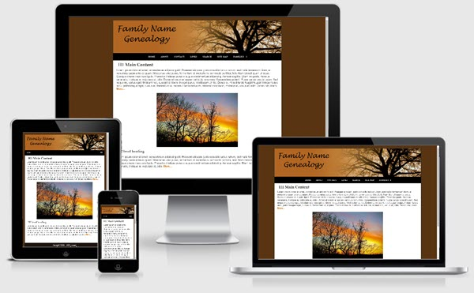

Trees at Sunset Template
This one column fixed width (1037px) template is based at at the mobile friendly templates offered at Frontpage to Expression Web. The layout is mobile friendly and passes Google's mobile-friendly test.
The download is available as a personal web package which includes a dynamic web template and all supporting files for a small site for use with Expression Web.

Images
The image for the masthead/sitename is inserted directly into the html code with the class class="scalable" applied so the image will resize to fit whatever device it is displayed on. A blank image is included for you to edit with your site name or you can create your own image. The image size is 1037px by 200px. Your image should be at least the same width.
Class style rules are included to float your images right or left or center them on the page as well as scaling them so they display in all devices.
Menu
The top menu on this template allows for 2 sub menu dropdowns and is from CSS Menu Maker. The last menu item Families does not link to any page but shows you how the dropdown works.
Search Box
The Google Custom search box will need to be adjusted with the code for YOUR custom search. You can, of course, use any search engine you choose.
CSS and Script Links
Besides the main style sheet (site.css), there is a special style sheet (media-queries.css) which allows the inclusion of special CSS rules to optimize your page for mobile browsers. There are also css and javascript files to make the menu work.
Additional Resources
You can find detailed instructions for working with the mobile friendly site templates as well as a pdf file you can download and print.
Gotcha's
You will need to preview your page within a browser as Design View may NOT display the page as it should look.